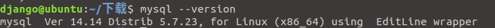
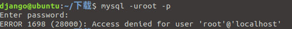
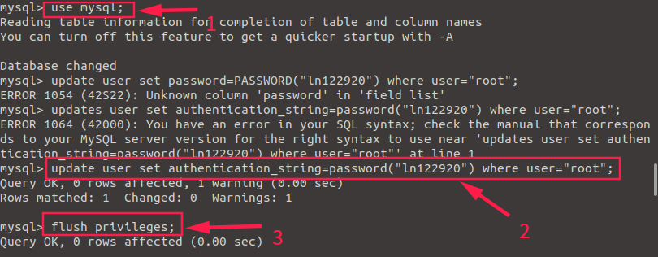
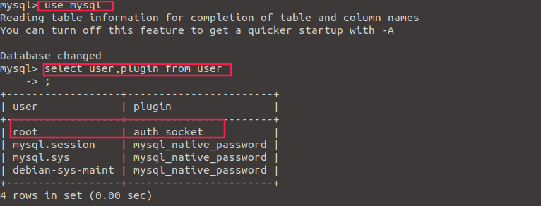
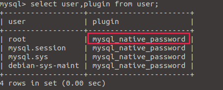

1. Install mysql on Ubuntu 18.04
1 | $ sudo apt update |
check mysql status, stop, start, and restart mysql server
1 | $ sudo systemctl status mysql |
2. Solved solution about: ERROR1698(28000):Access denied for user root@localhost
My operating system is ubuntu18.04, the following is my mysql version:

After the installation is complete, the following error occurs when logging into mysql:

Because the password was not set during the installation process, the password may be empty, but you can not enter mysql anyway.
Here is my process:
Step1: Modify the mysqld.cnf configuration file
Enter sudo vim /etc/mysql/mysql.conf.d/mysqld.cnf on the terminal (that is, the terminal) of ubuntu, enter this configuration file, and then in the configuration part [mysqld], add the phrase skip-grant-tables.
1 | 1 [mysqld] |
Function: It allows you to log in to mysql without a password.
Save: wq, exit. Enter: service mysql restart, restart mysql.
step2：设置root密码
Enter mysql -u root -p on the terminal, and press Enter when prompted to enter the password. After entering mysql, execute the following three sentences:
1 | 1 use mysql; # then enter |
see the picture below:

then input
quit, exit mysql.
step3：Comments skip-grant-tables
reopen mysqld.cnf, comment skip-grant-tables
1 | 1 [mysqld] |
Then return to the terminal and enter mysql -u root -p, you should be able to enter the database.
step4： Solve problem
If terminal still report an error at this time, you need to return to step3, re-enter the commented out statement (that is, delete the # symbol), re-enter mysql, first choose a database, such as use mysql;
Then enter select user, plugin from user; see the picture below:

It can be seen from the figure that after executing select user, plugin from user;, the cause of the error is because the field of the plugin root is auth_socket, then we can change it and replace it with mysql_native_password. Enter:
1 | update user set authentication_string=password("ln122920"),plugin='mysql_native_password' where user='root'; |
Then press Enter to execute the following, and then input select user, plugin from user; + Enter, we can see that the root user field has been successfully changed.

Finally quit quit. Return to step3.
Then this problem is completely solved.
Reference:
[1]https://www.cnblogs.com/cpl9412290130/p/9583868.html
Expand:
In the mysql8 version, the statement above to update the code seems to have changed, the syntax will be told to be wrong, here I post there is no syntax error:
1 | ALTER user 'root'@'localhost' IDENTIFIED BY 'newpassward'; //newpassward |
Correspond to this sentence to Step2 above.
If the MySQL server is running with the --skip-grant-tables option so it cannot execute this statemen error,
Then the solution is as follows:
First flush privileges, and then execute the above statement to modify the password –Step2.
Under MacOS, because there is no mysql configuration file, we need to do this when we change the password. Taking my example, I installed mysql through brew and entered the mysql installation directory: cd /usr/local/Cellar/mysql @5.7/5.7.29/bin.
Step1: ./mysqld_safe –skip-grant-tables to disable the verification function of mysql.
Step2: mysql -u root This will enter the interactive window of mysql without a password.
Step3: FLUSH PRIVILEGES clear permissions
Step4: SET PASSWORD FOR’root’@’localhost’ = PASSWORD(‘Your new password’); Set a new password.
This will modify/add the password successfully.
3. MySQL optimization
# Attention
Thread Pool is just provided in MySQL Enterprise.